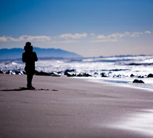

Poravnava slike ob besedilu
Z oblikovno lastnostjo float lahko element prestavimo na levi ali desni rob. Pri tako postavljenem elementu se vsebina drugih elementov odmika od njegovih robov. V tem se tudi razlikuje od absolutne postavitve, kjer se vsebina drugih elementov ne odmika.
Z oblikovno lastnostjo background-image določimo sliko v ozadju kateregakoli elementa. Za ozadje običajno izberemo sliko, ki je primerna za tlakovanje. Takšna slika ne sme biti preveč moteča, stiki med več enakimi slikami pa morajo biti skoraj neopazni. Slika mora biti oblike GIF, JPG ali PNG.
Poleg slike v ozadju lahko elementu določimo tudi barvo ozadja. Čeprav se to na prvi pogled ne zdi smiselno početje, se lahko pripeti, da brskalnik slike iz takega ali drugačnega razloga ne more naložiti. V tem primeru bo ozadje obarval. Tudi na sami sliki bi lahko imeli prosojne dele, skozi katere bi se videla barva ozadja.
Če za ozadje elementa izberemo sliko, lahko z lastnostjo background-attachment določimo, kaj se bo dogajalo z ozadjem, ko se bomo premikali po besedilu (z drsnikom ali kako drugače).
Če za ozadje elementa izberemo sliko, lahko lastnostjo background-position določimo položaj slike znotraj elementa. Tako postavljena slika je potem osnova za morebitno tlakovanje. Za vrednost te lastnosti običajno navedemo dve vrednosti, ki ju ločimo s presledkom: prva vrednost določa vodoraven položaj slike znotraj elementa, druga vrednost določa navpičen položaj slike znotraj elementa.